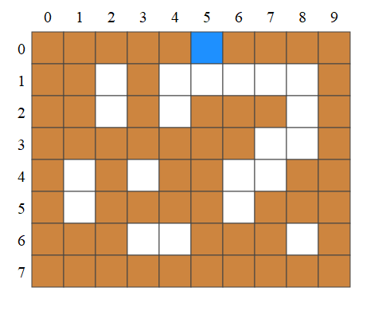

Percolation⚓︎
En géologie, la percolation est un écoulement d'eau à travers un sol sous l'effet de la gravité. Le sol n'étant pas compact, l'eau s'infiltre dans les "vides" et pénètre en profondeur.
Précisons tout de suite que l'on appelle sol, l'ensemble du milieu : la surface sur laquelle nous marchons et l'épaisseur de terre et de roche sous nos pieds !
On se propose ici de simuler grossièrement ce mécanisme en se demandant si un écoulement d'eau peut atteindre une certaine profondeur dans un sol.
Le sol⚓︎
Le sol sera représenté en Python par une liste de listes contenant des entiers. Dans cette liste :
- les
0représentent des "vides". L'eau peut traverser ces cellules - les
1représentent de la "terre". L'eau ne peut pas traverser ces cellules - les
2représentent de l'eau
On garantit que, mis à part une cellule vide sur la première ligne, tous les bords de la grille sont en "terre".
On donne ci-dessous un exemple de sol "sec" (aucune cellule ne contient la valeur 2) :
>>> sol = [
... [1, 1, 1, 1, 1, 0, 1, 1, 1, 1],
... [1, 1, 0, 1, 0, 0, 0, 0, 0, 1],
... [1, 1, 0, 1, 0, 1, 1, 1, 0, 1],
... [1, 1, 1, 1, 1, 1, 1, 0, 0, 1],
... [1, 0, 1, 0, 1, 0, 0, 0, 1, 1],
... [1, 0, 1, 1, 1, 1, 0, 1, 1, 1],
... [1, 1, 1, 0, 0, 1, 1, 1, 0, 1],
... [1, 1, 1, 1, 1, 1, 1, 1, 1, 1]
... ]
Comme on peut le voir, une cellule de la première ligne est "vide" (sol[0][5] vaut 0). L'eau peut donc pénétrer par cet endroit.
Comme on le verra dans la suite, l'eau va s'écouler dans ce sol. On peut récupérer un "sol sec" (sans aucun 2 dans la grille) en faisant sol = nouveau_sol().
Attention
N'oubliez pas d'exécuter le code ci-dessous afin de charger la fonction en mémoire
Génération d'un nouveau sol (NE PAS MODIFIER)
L'écoulement⚓︎
Lors de l'écoulement, l'eau peut se déplacer dans trois directions :
- vers le bas
- vers la gauche
- vers la droite
L'animation ci-dessous présente l'écoulement dans le sol précédent.

Dans ce cas, l'eau peut atteindre les profondeurs 0 à 5 mais pas la 6 ni la 7.
La fonction à écrire⚓︎
On écrira une fonction percolation prenant en argument les coordonnées de la cellule de départ (ligne i et colonne j) ainsi qu'une profondeur maximale à atteindre. La liste décrivant le sol sera déclarée dans le corps du programme et modifiée directement.
La fonction renverra True si l'eau atteint cette profondeur, False dans le cas contraire.
On utilisera une fonction récursive procédant ainsi :
- à chaque appel, on indique dans le sol que l'eau s'est écoulée jusqu'à cette cellule (on place un
2dans la cellule correspondante) - on vérifie ensuite que la profondeur de la cellule passée en argument est égale à la profondeur cherchée. Si c'est le cas, on renvoie
True - dans le cas contraire :
- on vérifie que la cellule de dessous est vide. Si oui, on explore cette cellule en appelant à nouveau la fonction. Si cette exploration renvoie
True, la fonction renvoieTrue - on procède de la même façon avec les cellules de gauche et de droite
- une fois ces trois cas étudiés, si la fonction ne s'est pas encore terminée (aucune des explorations n'a renvoyé
True) on renvoieFalse
- on vérifie que la cellule de dessous est vide. Si oui, on explore cette cellule en appelant à nouveau la fonction. Si cette exploration renvoie
Attention
Dans la mesure où la fonction modifie la liste Python représentant le sol (en l'inondant avec des valeurs 2), il est nécessaire de générer un nouveau sol avant chaque test
Exemples
On génère un sol sec grâce à la fonction nouveau_sol définie plus haut. Le point de départ est en i=0 et j=5.
>>> sol = nouveau_sol()
>>> # L'eau atteint-elle la profondeur 4 ?
>>> percolation(0, 5, 4)
True
On n'oublie pas d'assécher le sol avant de faire un nouveau test :
>>> sol = nouveau_sol()
>>> # L'eau atteint-elle la profondeur 6 ?
>>> percolation(0, 5, 6)
False
Au travail⚓︎
Compléter ci-dessous la fonction percolation :
TERRE = 1backslash-newlineVIDE = 0backslash-newlineEAU = 2backslash-newlinebackslash-newlinebackslash-newlinedef percolation(sol, i, j, profpython-underscoremax):backslash-newline sol[i][j] = ...backslash-newlinebackslash-newline if ... == ...:backslash-newline return Truebackslash-newline else:backslash-newline if ... == VIDE:backslash-newline if percolation(sol, ..., ..., profpython-underscoremax):backslash-newline return Truebackslash-newlinebackslash-newline ...backslash-newlinebackslash-newline ...backslash-newlinebackslash-newline return Falsebackslash-newlinebackslash-newlinebackslash-newline# Testsbackslash-newline# Test profondeur 0 (déjà atteinte)backslash-newlinesol = nouveaupython-underscoresol()backslash-newlineassert percolation(sol, 0, 5, 0)backslash-newline# Test profondeur 1 (atteignable)backslash-newlinesol = nouveaupython-underscoresol()backslash-newlineassert percolation(sol, 0, 5, 1)backslash-newline# Test profondeur 5 (atteignable)backslash-newlinesol = nouveaupython-underscoresol()backslash-newlineassert percolation(sol, 0, 5, 5)backslash-newline# Test profondeur 6 (non atteignable)backslash-newlinesol = nouveaupython-underscoresol()backslash-newlineassert not percolation(sol, 0, 5, 6)backslash-newlinebackslash-newlineTERRE = 1backslash-newlineVIDE = 0backslash-newlineEAU = 2backslash-newlinebackslash-newlinebackslash-newlinedef percolation(sol, i, j, profpython-underscoremax):backslash-newline sol[i][j] = EAUbackslash-newlinebackslash-newline if i == profpython-underscoremax:backslash-newline return Truebackslash-newline else:backslash-newline if sol[i+1][j] == VIDE:backslash-newline if percolation(sol, i+1, j, profpython-underscoremax):backslash-newline return Truebackslash-newlinebackslash-newline if sol[i][j-1] == VIDE:backslash-newline if percolation(sol, i, j-1, profpython-underscoremax):backslash-newline return Truebackslash-newlinebackslash-newline if sol[i][j+1] == VIDE:backslash-newline if percolation(sol, i, j+1, profpython-underscoremax):backslash-newline return Truebackslash-newlinebackslash-newline return Falsebackslash-newlinebackslash-newlinebackslash-newline# Testsbackslash-newlinebasepython-underscoresol = [backslash-newline [1, 1, 1, 1, 1, 0, 1, 1, 1, 1],backslash-newline [1, 1, 0, 1, 0, 0, 0, 0, 0, 1],backslash-newline [1, 1, 0, 1, 0, 1, 1, 1, 0, 1],backslash-newline [1, 1, 1, 1, 0, 1, 1, 0, 0, 1],backslash-newline [1, 0, 1, 0, 1, 0, 0, 0, 1, 1],backslash-newline [1, 0, 1, 1, 1, 1, 0, 1, 1, 1],backslash-newline [1, 1, 1, 0, 0, 1, 1, 1, 0, 1],backslash-newline [1, 1, 1, 1, 1, 1, 1, 1, 1, 1]backslash-newline]backslash-newlinebackslash-newlinefrom copy import deepcopybackslash-newline# Test profondeur 0 (déjà atteinte)backslash-newlinesol = deepcopy(basepython-underscoresol)backslash-newlineassert percolation(sol, 0, 5, 0)backslash-newline# Test profondeur 1 (atteignable)backslash-newlinesol = deepcopy(basepython-underscoresol)backslash-newlineassert percolation(sol, 0, 5, 1)backslash-newline# Test profondeur 5 (atteignable)backslash-newlinesol = deepcopy(basepython-underscoresol)backslash-newlineassert percolation(sol, 0, 5, 5)backslash-newline# Test profondeur 6 (non atteignable)backslash-newlinesol = deepcopy(basepython-underscoresol)backslash-newlineassert not percolation(sol, 0, 5, 6)backslash-newlinebackslash-newline
A
Commentaires⚓︎
{{ py('exo_corr', 0, "# TESTS") }}
On utilise par commodité les variables VIDE et EAU définies.
Dès la première ligne, on indique dans le sol que l'eau s'est écoulée jusqu'à cette cellule. Cette action empêchera de reconsidérer des cellules déjà visitées.
On teste ensuite le cas de base de la récursivité : la profondeur de la cellule actuelle est-elle égale à la profondeur visée ? Si oui, on renvoie True.
Dans le cas contraire, on explore successivement les trois directions (bas, gauche, droite) :
-
Pour chacune, on vérifie tout d'abord que la cellule est vide
-
Si c'est le cas, on teste alors le retour de l'appel
percolation(sol, nouveau_i, nouveau_j, prof_max). S'il vautTrue, on renvoie directementTrue -
Si aucune des explorations n'a renvoyé
True, on ne peut pas atteindre la profondeur souhaitée : on renvoieFalse
Z